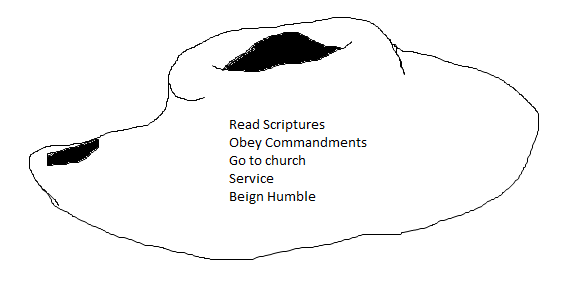
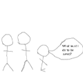
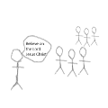

Jesus Christ is the son of god, and he is perfect. He attoned for our sins, so that we, his imperfect brothers and sisters, can return to live with our father in heaven.
What I talked about in devotional in class on 09/19/2017.
I can strive to always stand in holy place, meaning I will always try to keep the commandments. I can do this through the same way as in answer 2
I have studied Matthew 1–2 and completed this lesson on (09/18/17).
Additional questions, thoughts, and insights I would like to share with my teacher: Programming is hard, and this is going faster than I thought.
Click here to go back to the homepage
Somebody who has repented of any sin, not just these ones, would strive to not commit those sins again. In my opinion.
I don't remember much of it, but I felt peaceful, and I remember that it was hard to take the clothes for baptism off after they had gotten wet.
God is the father of our spirits. Jesus Christ is the creator of the heavens and of the earth. The holy ghost is the revelator.
I have studied Mathew 3 and completed this lesson on (09/21/17).
Click here to go back to the homepage
The devil will pray upon our weaknesses, and the desires of our heart.
WhenI went on the "LDS Heritage Tour" over the summer, I felt really happy for not using my phone, and pondering the scriptures.
Because he has done so many things for us, and I feel like it is my duty to repay him.
I have studied Matthew 4 and completed theis lesson on (09/21/17).
Click here to go back to the homepage
One of my ex's last year set a righteous example for me by getting me to go on the lds heritage tour over the summer.
Start: I will start I am going to start striving to be more righteous.
✓ Stop: I'm going to stop arguing with my sister.
Continue: I'm going to continue working on make up for seminary.
I have studied Matthew 5 and completed this lesson on (09/23/17).
Click here to go back to the homepage
During the LDS Heritage Tour I prayed to know if the church is true, and after I prayed multiple times I got an answer, and I now know that it is true.
We can pray more effectively by not praying in vain repetition.
We can't serve god and mammon because mammon is wicked, and god cannot dwell with wicked things.
By putting heavenly father first I have recieved happiness.
I will strive to keep the commandments and to put god first.
I have studied Matthew 6-7 and completed this lesson on (09/23/17).
Click here to go back to the homepage
I have studied Mattew 8-10 and completed this lesson on (09/23/17).
Click here to go back to the homepage
On the LDS Heritage Tour that I went on over the summer there were many times that I felt the spirit, and there were many times that I prayed to know if the church is true. Because of all of these situations I know for certain that Jesus Christ is the son of God.
During break ups I've cried to him in prayer, and after the prayers I have felt better.
I did it.
I have studied Matthew 11-12 and completed this lesson on (09/25/17).
I will pray with a sincere heart for a softend heart, and a strong mind.
I have studied Matthew 13:1-23 and completed this lesson on (09/25/17).
I have studied Matthew 13:24-58 and completed this lesson on (09/25/17).
We can fix our eyes on Jesus Christ by living by his commandments and by trying to be like him. My dad is a good example of that because he lives the commandments, and I don't remember a time when he was scared.
He lifts us from our fears and doubts by providing the Holy Ghost to guide us.
I have studied Mathew 14 and completed this lesson on (09/25/17).
By participating in unhollowed acts we won't have the spirit with us to help us resist temptations.
We become defiled because the holy ghost and God can't dwell in unholy places, and if we entertain evil thoughts then we are unholy, and we are defiled by desires because we aren't keeping in mind Heavenly Father.
I can exercise faith in Jesus Christ by reading my scriptures everyday, and by keeping his commandments.
I have studied Matthew 15 and completed this lesson on (09/25/17).
Yes, I believe that this is the only true church. I think that this is the only true church because it has had the fullness of the gospel revealed to it.
To listen to the words that they have to say.
I have studied Matthew 16-17 and completed this lesson on (09/25/17).
When one of my ex's cheated on me.
I have studied Matthew 18-20 and completed this lesson on (09/27/17).
Flash a dashing smile at my friend or family member and ask nicely. Then if that doesn't work bribe them.
In english we are talking about fate, and I feel like that would be an appropriate time to talk about Jesus Christs fate. I also think that anytime is an appropriate time to talk about him because he is my savior.
I have studied Matthew 21:1-16 and completed this lesson on (09/26/17).
When I first tried saurkraut. It looked like it was going to taste like lettuce, but it tasted really bad.
Heavenly Father sending Jesus Christ here, and him being crucified.
When I'm at young mens.
I have studied Matthew 21:17-22:14 and completed this lesson on (09/26/17).
He is basically saying keep the things of the world of the world and what is of God's of God's.
It is saying that you should love him with all of your being.
He is the son of God, and I think that it is horrible what he had to go through.
I have studied Matthew 22:15-26 and completed this lesson on (09/26/17).
It is important to obey God, so that we may recieve his commandments and live with him again.
I have studied Matthew 23 and completed this lesson on (09/26/17).
What will he look like? Will I be found worthy of his presence?
It is being fulfilled by the missionary's all around the world today, and I will help the fulfilling of this prophecy by going on a mission.
By pondering the words of the scriptures, and the words of the prophets today.
I would not judge those around me.
I have studied Joseph Smith-Matthew; Matthew 24 and completed this lesson on (09/26/17).

I have studied Matthew 25 and completed this lesson on (09/26/17).
I have been blessed in listening to the words of the Lord because I have been strenghtend in times of weakness. I am going to try to always listen to the words of the Lord.
I will look at my coin during it to remember him
I have studied Matthew 26:1-30 and completed this lesson on (09/26/17).
The savior's example can strengthen us in any situation by knowing what he did for us.
Going on the LDS Heritage Tour. I made the choice because my girlfriend at the time wanted me to go, and I feel pretty good about going on it.
That even in the fourty days fasting and when he was in the garden of gethsemane he obeyed his fathers commandments. I can follow the saviors example by keeping the commandments.
I have studied Matthew 26:31-75 and completed this lesson on (09/26/17).
I would have felt dread, and I would have thought that he didn't deserve this.
I have studied Matthew 27-28 and completed this lesson on (09/26/17).
Because the natural man is an enemy to god.
Because all I need to do is pray for those temptations to leave me.
I have studied Mark 1 and completed this lesson on (09/29/17).
I have studied Mark 2-3 and completed this lesson on (09/29/17).
| Physical | Spiritual | Mental | Social |
|---|---|---|---|
| Being stuck in a wheelchair for 12 years. Having any health problems. | Not knowing if god is there. | Being judged, and having mental health problems. | Not going to parties, and being judged for it. |
When I've gone through breakups, I've often times cried to the lord in prayer, and he's always calmed my heart, and brought peace to my mind.
I have studied Mark 4-5 and completed this lesson on (09/29/17).
By being there to listen to those in need, and I have been helped by people being willing to listen aswell.
I have studied Mark 6-8 and completed this lesson on (09/29/17).
Because it can help them know that if we remain faithful we will beable to overcome those difficult times.
I don't think I have ever done a full fast, so I can't really answer this one.
I have studied Mark 9:1-29 and completed this lesson on (09/29/17).
I have studied Mark 9:30-50 and completed this lesson on (09/29/17).
What lack I yet?
Because it was a higher percentage of what she had.
I have studied Mark 10-16 and completed this lesson on (09/29/17).
They would say something like "that through faith all things are possible", and a time that has strengthend my belief is: right know as I get closer and closer to being finished with this makeup work.
I will be blessed with many things such as happiness.
I have studied Luke 1 and completed this lesson on (09/29/17).
Because it was the start of the fulfillment of the atonement, and the world was going to experience, lots of miracles from him.
| Intellectually | Physically | Spiritually | Socially | |
|---|---|---|---|---|
| Goal | Having straight A's. | Getting a 6.3 Power Ratio. | Get all of my makeup work done. | Learn everybodies names in acapella. |
| Plan | Turn in all of my homework, and pray/study for all of my test. | Pray for strength when I am feeling week, and lift after school. | Do makeup work everyday. | Practice everybodies names. |
I have studied Luke 2 and completed this lesson on (09/29/17).
All blessings that are given, and having a living prophet.
Jesus Christ is the best role model that anybody could ever have, and I am so thankful that he attoned for my sins. I know that Jesus Christ is the redeemer, and have experienced true joy because of his sacrifice.
I have studied Luke 3-4 and completed this lesson on (09/29/17).
| Similarities | Differences |
|---|---|
|
|
I have studied Luke 5 and completed this lesson on (09/29/17).
To help a struggling family, for refreshments, to get help in return, and for company.
Christmas one year we got a giant bag of gifts, and we don't know who it was from.
I have studied Luke 6:1-7:18 and completed this lesson on (09/29/17).
Creditor = Jesus
Debtor who owes 50 pence = Simon the Pharisee
Debtor who owes 500 pence = the woman
Simon treated him like he was kind of sinfull, and the woman treated him, as he was meant to be treated.
I have studied Luk 7:18-50 and completed this lesson on (09/29/17).
| Responsibilities of a disciple of Jesus Christ | Other priorities |
|---|---|
|
|
Anybody that doesn't work Sunday's.
Dear so and so,
Loving people is easy, and I encourage you to do it.
Sincerly your friend,
Landon
I have studied Luke 8:1-10:37 and completed this lesson on(09/29/17).
Going to young mens or doing seminary makeup work.
Doing seminary makeup work or watching general confrence.
When I was on the LDS Heritage Tour I persistently prayed to know if the church was true, and I now know that it is true.
As we seek to do our part in bringing forth God's kingdom and His righteousness, God will help provide for our needs and prepare a place for us in His kingdom.
I have studied Luke 1038-12:59 and completed this lesson on (09/30/17).
To become a better disciple of Jesus Christ I will strive to serve those around me, and I will leave situations where I feel temptation.
By sharing our testimony so that the spirit can speak to them.
I have studied Luke 13-15 and completed this lesson on (09/30/17).
I have studied Luke 16 and completed this lesson on (09/29/17).
I wanted to have greater faith on LDS Heritage Tour, and I wanted that because I wanted the blessings that came with it.
Our faith will increase as we strive to do all that Heavenly Father commands.
Our faith will increase as we strive to do all that Heavenly Father commands and as we rememeber that we are always indebted to him.
This will increase our faith because when acting on a habbit we strengthen it.
I'm greatful for Cierra, my family, an education, physical strength, the atonement, and I will show my gratitude by keeping the Lord's commandments.
I have studied Luke 17 and completed this lesson on (09/30/17)
By believeing in him, and keeping his commandments, and through this they will have joy.
I hvae studied Luke 18-21 and completed this lesson on (09/30/17).
| Who talked to Peter? | What did peter say? | |
|---|---|---|
| John 18:15-17 | A damsel | "I am not." |
| John 18:18,25 | Servants and officers | "I am not." |
| John 18:26-27 | The servant of the high priest, whose ear Peter had cut off. | "Peter then denied agin" |
I have studied Luke 22 and completed this lesson on (09/30/17).
Because he was resurrected I know that I can one day be resurrected also.
Because Jesus Christ was resurrected you can be resurrected too.
I have studied Luke 23-24 and completed this lesson on (09/30/17).
Because in those versus it states that he is the creator of the world.
It has increased in how greatful I am for him, and how much I love.
I have studied John 1 and completed this lesson on (09/30/17).
Jesus's mother hearkend unto his word aswell, and it says that he has power to turn water into wine.
I can show reverence for the temple by not doing unholy things. Someways are not swearing, commiting adultry, or/and not breaking any commandments.
I have studied John 2 and completed this lesson on (09/30/17).
If you aren't baptised, and you don't have the holy ghost confered upon you then you can't enter into the kingdom of God.
It makes me feel really special knowing that I am loved by my Heavenly Father and Jesus Christ enough for him to die for me.
They all involve keeping his commandments. I will show my belief in Jesus Christ by keeping his commandments
Jesus answered, verily, verily, I say unto thee, Except a man be born of water and of the Spirit, he cannot enter into the kingdom of God.
Brother Eliason is the director of LDS Heritage Tours, and characteristics of him are loving, kind, gentle, and humble.
I have studied John 3 and completed this lesson on (09/30/17).
Because without either we are doomed to die.
I have studied John 4 and completed this lesson on (09/30/17).
I know the Savior is merciful and compassionate because he has helped me in times where I felt alone.
It has helped me because I know that I can rely on him in my times of need and always.
Because like Nephi you can rely on past experiences during times of suffering.
I have studied John 5-6 and completed this lesson on (09/30/17).
I know the church is true because as I have lived it I have been blessed.
I want to gain a greater testimony about the atonement, and I am going to read and continue with my makeup work to gain it.
When on the LDS Heritage Tour I gave out a book of mormon, and it was a really good experience.
I have studied John 7 and completed this lesson on (10/02/17).
He helps me to avoid spiritual darkness by keeping the devil away from me when I ask him to.
Sexual Purity
| In what wasy does living this standard bring freedom? | In what wasy does not living this standard bring bondage? |
|---|---|
| It brings freedom by keeping you free from disease, and keeping you free from the emotional termoil that comes along with having sexual relationships outside of marraige. | It puts you in bondage through guilt, disease, emotional termoil, and many other things. |
I have felt immense joy from serving others on a regular basis, and I am going to seek to be free by living the law of Chastity, and by being sexualy pure.
I have studied John 8 and completed this lesson on (10/02/17).
The fact that if Jesus was not from God he wouldn't have been able to give the blind man his sight.
I will stand true to my faith in times of opposition, so that my understanding will be come clearer, and so that my testimony will become strengthend.
I have studied John 9 and completed this lesson on (10/02/17).
Jesus Christ is the Good Shepherd.
He calls himself the Good Shepherd because we are like sheep who would be lost without him.
It helps us better understand that he wants everybody on earth to be of his fold.
I have studied John 10 and completed this lesson on (10/02/17).
I have studied John 11 and completed this lesson on (10/02/17).
When Jesus raised Lazarus from the dead, and him weeping when he found out that he died. Witnessing Jesus cry would make me feel compassion towards him, and seeing him then raise Lazarus from the dead would confirm my testimony even more.
It means that I can either choose to believe or choose not to believe, and it also means that I have free agency.
I have studied John 12 and completed this lesson on (10/02/17).
Brother Cuadra is always willing to help, and he's allowed me to makeup 3 years of seminary. I want to always be able and willing to help.
I have studied John 13 and completed this lesson on (10/02/17).
I have memorized John 14:6
I passed it off to my mom.
If ye love me, keep my commandments.
I have studied John 14-15 and completed this lesson on (10/02/17).
Because I know that it is possible.
I have studied John 16 and completed this lesson on (10/02/17).
Knowing them means that you know what they are about, and it means that your are closer to them than just knowing about them. I can know about a person, but if I truly know them then I would be close with them.
And this is life eternal, that they might know thee the only true God, and Jesus Christ, whom thou hast sent.
By keeping the standards of the church in every situation. I am going to do this better by praying for strength, and by not getting into situations where I am tempted.
By continuing to read my scriptures everyday.
I have studied John 17 and completed this lesson on (10/02/17).
| Jesus Christ's concerns | Pilate's concerns |
|---|---|
|
|
I have studied John 18-19 and completed this lesson on (10/02/17).
"What are we going to do know that our savior is dead?" *THREE DAYS GO BY* "Praise be to the all mighty God our savior has risen!"
"A robber has taken him!" "I turned around and was going to leave when I saw this glowing white figure, and a few moments later I realized it was Jesus."
I would've because he said that he was going to rise again.
The parable of the servant who was forgiven of his debt of 10,000 talents, and then turned around and didn't forgive his own servant who only owed 100 pence. This parables meaing, at least what I think it is, is that our Lord will forgive all of our wrong doings to him, and he wants us to do the same, and if we don't we will be tormented. I also like how he said that how many times we should forgive someone is seventy times seven.
I have studied John 20-21 and completed this lesson on (10/02/17).
I know that Jesus Christ directs His Church today through revelation because I have diligently read my scriptures and prayed to know if it was true.
It helps me to know that we get instuctions from the Lord at least every six months.
I have studied Acts 1:1-18 and completed this lesson on (10/03/17).
Because it means that this church is formed by God, and that it is, in fact, the Church of Jesus Christ.
I have studied Acts 1:9-26 and completed this lesson on (10/03/17).
I can ponder my scriputres more, and I can pray for help and guidance.
T P s u t R a b b e o o y i t n o J C f t r o s a y s r t g o t H G
I have studied Acts 2 and completed this lesson on (10/03/17).
Breaking up with my last girlfriend.
It says in Acts 3:19-21 that the "restituion of all things" and in Amos 3:7 it says "revealeth his secret unto his servants the prophets".
They will wither, and their self respect will vanish.
I have studied Acts4-5 and completed this lesson on (10/03/17).
My dad when he baptised me, and I am grateful that he was worthy to baptise me.
I am doing this makeup work because I was guided by the Holy Ghost.
I have studied Acts 6-7 and completed this lessonon (10/03/17).
I have studied Acts 8 and completed this lesson on (11/01/17)
Some abilitites or traits that he could use are my programming skills, social skills, willngness to do his work.
I have studied Acts 9 and completed this lesson on (11/16/17).
To truely listen as I watch General Conference and to follow what they say.
I have studied Acts 10-12 and completed this lesson on (11/30/17).
I feel so much love and respect towards him.
They are true disciples of Christ, and I want to learn more of Christ.
I have studied Acts 13-14 and completed this lesson on (11/16/17).
I think he meant that God saw both the converted Jews and the converted Gentiles as equals.
I will use the words from the prophets and apostles to help direct me by obeying what they say, and by being worthy to have the Holy Ghost with me.
I have studied Acts 15 and completed this lesson on (11/16/17).
Never postpone responding to a prompting from the Lord.
Lots of blessings, and you won't miss any opportunities that the lord wants you to have.
On Heritage Tours almost everyone placed a Book of Mormon.
| Scriptures: | Acts 16:25 | Acts 16:26 | Acts 16:27-28 | Acts 16:29-30 | Acts 16:31-32 | Acts 16:33-34 |
|---|---|---|---|---|---|---|
| Pictures: |  |  |
I have studied Acts 16-17 and completed this lesson on (12/1/17).
Not taking the sacrament.
I have studied Acts 18-19 and completed this lesson on (12/27/17).
When doing a service project for one of my neighbors. It felt really nice. I learned that serving benefits both people.
I can love my neighbor, be charitable, serve my fellow man, fulfill my calling, and keep Heavenly Father's commandments.
I have studied Acts 20-22 and completed this lesson on (12/27/17).
We can overcome Satan's power, recieve forgiveness for our sins and gualify for the celestial kingdom.
Paul Sailed as a prisoner and performed miracles
I have studied Acts 23-28 and completed this lesson on (12/27/17).
Because as we learn of what others went through for this religion we won't feel alone.
I have studied Romans 1-3 and completed this lesson on (1/3/18).
I would say that it takes both a belief in Jesus Christ (faith) and obedience to the commandments in order to recieve God's Grace.
By yielding to a certain sin we make it so that it is easier to commit that sin again.
If we yield ourselves to God, we can become free from sin and receive the gift of eternal life.
I will do more makeup work, and serve others.
I have studied Romans 4-7 and completed this lesson on (1/3/18).
| Requirements |
|
|---|---|
| Opposition |
|
| Inheritance |
|
I have experienced God's love during challenges by recieving an overwhellming feeling of peace and love.
Romans 10:9, 13 means that if we believe on him we can be saved through repentance, but there is more than just believing. To be saved we need to repent and follow the Lord's commandments. In order to repent we need to go through the repentance process.
I have studied Romans 8-11 and completed this lesson on (1/8/18).
| Romans 12:9-16 | Don't curse those who wrong you but instead bless them. | The above teaching will help me dedicate my life to God and refrain from conforming to the world by making me more christ like. |
|---|---|---|
| Romans 12:17-21 | Be not overcome of evil, but overcome evil with good. | That will help me to be more loving and kind to all those around me. |
| Romans 13:8-13 | Love thy neighbour as thyself. | If I do that then I will be keeping every other commandment aswell. |
Joseph Smith dedicated his life to God by sealing his testimony with his life. He spent his whole life trying to do and doing the Lord's will.
Because that causes contention and contention is of the devil.
In the Sacred Grove I read a scripture (I don't remember which one) and I felt like it was talking to me.
I have studied Romans 12-16 and completed this lesson on (1/10/18).
It might bring people closer to God for his knowledge and guidance.
I have studied 1 Corinthians 1-2 and completed this lesson on (1/10/18).
I think he meant only those who work prosper.
At a party with alcohol, marijuana, or other bad things.
Marley
I have studied 1 Corinthians 3-6 and completed this lesson on (1/10/18).
| It is never acceptable to participate in physical intimacy, not even in marriage. | Physical intimacy between husband and wife is ordained of God. | It is acceptable to participate in physical intimacy with anyone. |
My mom, dad, and sister went to church last year, but I didn't and it helped me to go a few times.
I could not be rude to others.
I have studied 1 Corinthians 7-8 and completed this lesson on (1/13/18).
I desire eternal life because I want to be with my family forever, and I want to be able to live like unto God.
I can start with small yieldings to my spirit and gradually increase the yieldings. I can also read the scriptures, and pray daily.
I have studied 1 Corinthians 9-10 and completed this lesson on (1/13/18).
I feel like marriage is really sacred and shouldn't be taken lightly. Marriage - in the temple - is ordained of God and I want to be worthy to get married someday.
Women tend to be more level headed then men, and they tend to be driven less by hormones. Men are stronger typically, and have the priesthood. Neither a Man nor a Woman could bring a child into this world alone, so they are both vitaly important parts to life.
Marriage is a vital part of God's plan because it seals the Husband to the Wife and both of them to there children once they bear children.
What have I done this week that I could've done better? Why do I deserve the Atonement?
I am going to strive to be more like Jesus Christ, and I am going to read the scriptures daily.
I have studied 1 Corinthians 11 and completed this lesson on (1/13/18).
Jesus christ was always kind and loving and those are descriptions of charity.
I have studied 1 Corinthians 12-14 and completed this lesson on (1/13/18).
| Scripture | Principle | |
|---|---|---|
| 1 Corinthinas 15:16-19 | If Jesus had not risen from the dead, then ... | our faith would be in vain, we would perish, and we would be miserable. |
| 1 Corinthians 15:20-22 | Since Jesus did rise from the dead, then ... | we will all live again. |
It can bring comfort by reminding us that we will see our loved ones again.
I know that I will be able to see my grandma again because of Jesus Christ's atoning sacrafice. A sacrafice so great that it caused Jesus to blead from every pore of his body.
I can go to the temple weekly, and it will help strengthen my testimony of Resurrection by making me part of that process.
But now is christ risen from the dead, and will become the firstfruits of them that slept.
For since by man came death, by man came also the resurrection of the dead.
For by Adam all die, even so by Christ shall all be made alive.
I have studied 1 Corinthians 15:1-29 and completed this lesson on (1/16/18).
It can make it so that a person wants to obey the commandments.
I learned that it's hard to explain stuff.
Because everybody will be resurrected but everybody will be resurrected into different states of glory.
I have studied 1 Corinthians 15:30-16:24 and completed this lesson on (1/16/18).
I recieve his comfort everyday, and I help others by caring about them.
Because we will end up condenming ourselves by not being able to move forward.
I have studied 2 Corinthians 1-3 and completed this lesson on (1/16/18).
I have studied 2 Corinthians 4-7 and completed this lesson on (1/16/18).
Click here to go back to the homepage
Back to Top